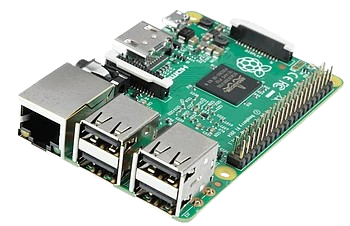

Raspberry Pi 4
Quad-core, 2–8 Go de RAM, 2× micro-HDMI, USB 3, Ethernet Gb.
Nano-ordinateur polyvalent pour l’apprentissage, l’IoT et les projets embarqués. Découvrez ses modèles, ses spécifications et ses connectiques GPIO.
Compact, économique, basse consommation et doté d’environ 40 broches GPIO, le Raspberry Pi s’intègre aussi bien en maker projects (LED, capteurs, robotique) qu’en edge computing (serveurs légers, passerelles réseau).
Quad-core, 2–8 Go de RAM, 2× micro-HDMI, USB 3, Ethernet Gb.
CPU/GPU plus rapides, PCIe, encodeur vidéo renforcé, meilleures IO.
Format mini, Wi-Fi, parfait pour capteurs, intégrations et objets connectés.
Microcontrôleur économique et efficace, idéal pour l’embarqué et l’apprentissage du C/C++ ou MicroPython.
Plan logique : repères 3.3V, 5V, GND, I²C, SPI, UART. (Vérifiez toujours la datasheet de votre modèle.)
⚠️ Les attributions exactes (SDA/SCL, MOSI/MISO/SCLK, TX/RX, etc.) varient selon la révision. Pour des branchements réels, reportez-vous à la documentation officielle de votre modèle.
| Modèle | CPU | RAM | Vidéo | Ports | Réseau | Alim |
|---|---|---|---|---|---|---|
| Pi 4 | Quad-core A72 | 2–8 Go | 2× micro-HDMI (4K) | 2× USB3, 2× USB2 | GbE, Wi-Fi, BT | USB-C 5V/3A |
| Pi 5 | CPU/GPU next-gen | 4–8 Go | 2× micro-HDMI (4K) | USB3, PCIe (ext.) | GbE, Wi-Fi, BT | USB-C 5V/5A |
| Zero 2 W | Quad-core A53 | 512 Mo | Mini-HDMI | USB OTG | Wi-Fi, BT | 5V (USB) |
| Pico | RP2040 Dual-core ARM Cortex-M0+ |
264 Ko SRAM + 2 Mo Flash |
— | 26 GPIO I²C, SPI, UART, ADC |
— | Micro-USB 5 V ou GPIO 3,3 V |
Raspberry Pi OS (Debian) est recommandé. On peut aussi utiliser Ubuntu Server, DietPi, etc.
Carte micro-SD (classe A1/A2 conseillée) ou SSD via USB (performances supérieures).
Alim USB-C 5V adaptée au modèle, boîtier ventilé pour charges lourdes (Pi 4/5).